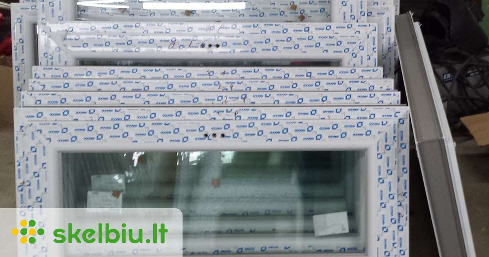
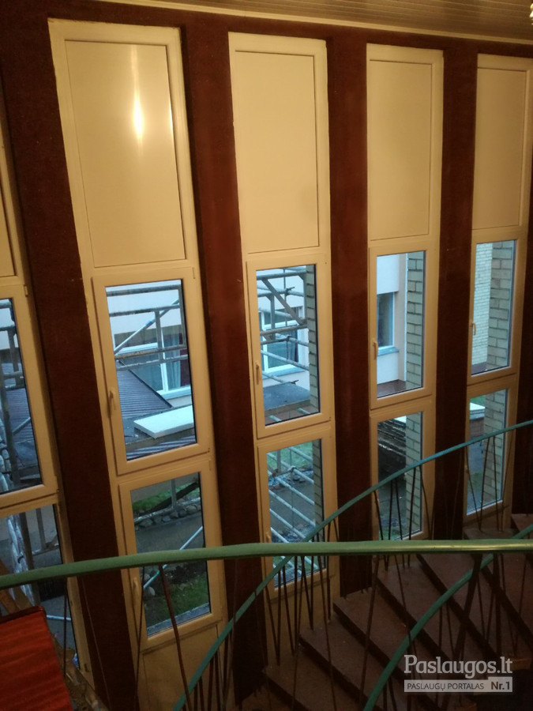

Premium plastikiniai langai ir durys ✔️ Balkonų stiklinimas
 +370 633 45069 pardavimai@premium-langai.lt I-V: 10:00 - 19:00 Langai Apie plastikinius langus -------------- Plastimet Click-On AD Plastimet Click-On MD Plastimet Elite 90 -------------- Langų spalvos Durys Apie plastikines duris -------------- Stumdomos terasos durys Plastimet Nature ALVERSA Plastimet Nature SLIDE Plastimet Nature HST -------------- Plastikinės lauko durys Lauko durys Thermal 70 Lauko durys Gealan S8000 Lauko durys Gealan S9000 Balkonų stiklinimas Apie balkonų stiklinimą -------------- Balkonų stiklinimas plastiku Balkonų stiklinimas aliuminiu Pagalba Paslaugos Kontaktai Mūsų kontaktai Klientų atsiliepimai Pradžia
PREMIUM langai už
įprastų langų kainą
Plastimet Elite 90 - A klasė
Plastimet Click-On AD - A+ klasė
Plastimet Click-On MD - A++ klasė
Plastikiniai langai ir durys iš rinkos ekspertų
Plastikiniai langai ir durys
Kainos skaičiuoklės
Jei norite sužinoti kainas, pasinaudokite šia langų ir durų kainos skaičiuokle. Nurodykite pageidaujamą sistemą, papildomus priedus, funkcijas bei matmenis ir sužinosite, kiek kainuos Jūsų pageidaujami gaminiai.
SkaičiuotiIšsikvieskite matuotoją
Jei dabar skubate ir neturite laiko gilintis - ne bėda. Spauskite šį klavišą ir išsikvieskite mūsų specialistą konsultacijai bei nemokamam angų matavimui. Tik išsikvieskite, ir toliau viską atliksime mes.
IšsikviestiPateikite užklausą
Jei gaminių daug, jie sudėtingi, reikalaujantys patirties bei išmanymo - ne bėda. Spauskite šį klavišą ir pateikime mums savo projekto, langų ar balkono brėžinius bei nuotraukas. Toliau viską atliksime mes patys.
PateiktiPlastikiniai langai CLICK-ON AD
Optimaliausi
Novatoriški 6/6 kamerų, 80/80 mm pločio, 2 padidinto atsparumo trinčiai ir gniuždymui įveriamų EPDM sandarinimo tarpinių sistemos, premium klasės plastikiniai langai su naujos kartos 44 mm stiklo paketais Ug=0,5 W/(m²K) , orientuoti į aukštų kokybės reikalavimų pastatų savininkus, kurie ieško A energetinio efektyvumo klasės gaminio.
Sužinoti daugiauPlastikiniai langai CLICK-ON MD
Šilčiausi
Išskirtinės kokybės, 6/6 kamerų, 80/80 mm pločio, 3 padidinto atsparumo trinčiai ir gniuždymui įveriamų EPDM sandarinimo tarpinių sistemos, premium klasės langai su naujos kartos 44 mm stiklo paketais Ug=0,5 W/(m²K) , orientuoti į individualių namų savininkus, kurie statosi namus ir nori pasiekti A++ energetinio efektyvumo klasę.
Sužinoti daugiauPlastikiniai langai ELITE 90
Populiariausi
išskirtiniai 6/6 kamerų, 90/80 mm pločio, 2 padidinto atsparumo trinčiai ir gniuždymui įveriamų EPDM sandarinimo tarpinių sistemos, premium klasės langai su naujos kartos 44 mm stiklo paketais Ug=0,5 W/(m²K) , pasižymintys labai aukšta kokybe ir gera kainas. Šio modelio langai buvo kurti A energetinio efektyvumo klasės gyvenamųjų ir visuomeninių pastatų savininkams.
Sužinoti daugiauStumdomos durys Nature ALVERSA
Populiariausios
Novatoriškos 6/6 kamerų, 80/80 mm pločio, 2 padidinto atsparumo trinčiai ir gniuždymui įveriamų EPDM sandarinimo tarpinių sistemos, premium klasės stumdomos plastikinės terasos durys su naujos kartos 44 mm stiklo paketais Ug=0,5 W/(m²K) , orientuotos į aukštų kokybės reikalavimų pastatų savininkus, kurie ieško A energetinio efektyvumo klasės gaminio.
Sužinoti daugiauStumdomos durys Nature SLIDE
Novatoriškiausios
Inovatyvios 6/4 kamerų, 70/70 mm pločio, 97 mm varčios aukščio, 140 mm montavimo gylio, 2 sandarinimo tarpinių sistemos stumdomos plastikinės terasos durys, orientuotos į aukštų kokybės reikalavimų pastatų savininkus. Šio modelio durys yra skirtos tiems, kam reikia stumdomų terasos durų, tačiau dėl per didelio angos dydžio nėra galimybės panaudoti įprastines lygiagrečiai stumdomas ir atverčiamas PSK tipo duris.
Sužinoti daugiauStumdomos durys Nature HST
Prestižiškiausios
Naujos kartos 9/5 kamerų, 85 mm pločio, 83/100 mm varčios aukščio, 197 mm montavimo gylio pakeliamos nustumiamos plastikinės terasos durys (iš vok. kalbos Hebeschiebetüren ), orientuotos tik į pačios aukščiausios kokybės reikalavimų pastatus. Šio modelio durys yra skirtos tiems, kam reikia išskirtinai didelių gabaritų terasos durų, tačiau dėl per didelio angos dydžio nėra galimybės panaudoti nei įprastinių lygiagrečiai stumdomų ir atverčiamų PSK tipo, nei Plastimet Nature SLIDE durų.
Sužinoti daugiauPlastikinės lauko durys Thermal 70
Pragmatiškiausios
Populiariausios 5/4 kamerų ir 70/70 milimetrų pločio, 2 padidinto atsparumo trinčiai ir gniuždymui įveriamų EPDM sandarinimo tarpinių sistemos plastikinės lauko durys, pasižyminčios vidutinėmis savo klasėje fizikinėmis savybėmis ir išskirtinai patrauklia kaina. Šios durys puikiai tiks daugumai renovuojamų ir naujai statomų pastatų, kuriems nekeliami aukščiausi termoizoliaciniai reikalavimai.
Sužinoti daugiauPlastikinės lauko durys GEALAN S8000 IQ
Žinomiausios
Lietuvoje geriausiai žinomos padidintos statikos, 5/4 kamerų ir 74/74 milimetrų pločio, 2 sandarinimo tarpinių sistemos plastikinės lauko durys, turinčios aukštesnes nei vidutines fizikines savybes ir kokybę atitinkančią kainą. Šios durys puikiai tiks daugumai renovuojamų ir naujai statomų pastatų, kuriems keliami vidutiniai termoizoliaciniai reikalavimai.
Sužinoti daugiauPlastikinės lauko durys GEALAN S9000 IQ
Populiarėjančios
Greitai populiarėjančios 6/5 kamerų ir 82/82 milimetrų pločio, 3 sandarinimo tarpinių sistemos plastikinės lauko durys, pasižyminčios aukštomis savo klasėje fizikinėmis savybėmis ir vidutine rinkos kaina. Šios durys puikiai tiks daugumai renovuojamų ir naujai statomų pastatų, kuriems keliami aukštesni nei vidutiniai termoizoliaciniai reikalavimai.
Sužinoti daugiauPlastikiniai langai CLICK-ON AD
Optimaliausi
Novatoriški 6/6 kamerų, 80/80 mm pločio, 2 padidinto atsparumo trinčiai ir gniuždymui įveriamų EPDM sandarinimo tarpinių sistemos, premium klasės plastikiniai langai su naujos kartos 44 mm stiklo paketais Ug=0,5 W/(m²K) , orientuoti į aukštų kokybės reikalavimų pastatų savininkus, kurie ieško A energetinio efektyvumo klasės gaminio.
Sužinoti daugiauPlastikiniai langai CLICK-ON MD
Šilčiausi
Išskirtinės kokybės, 6/6 kamerų, 80/80 mm pločio, 3 padidinto atsparumo trinčiai ir gniuždymui įveriamų EPDM sandarinimo tarpinių sistemos, premium klasės langai su naujos kartos 44 mm stiklo paketais Ug=0,5 W/(m²K) , orientuoti į individualių namų savininkus, kurie statosi namus ir nori pasiekti A++ energetinio efektyvumo klasę.
Sužinoti daugiauPlastikiniai langai ELITE 90
Populiariausi
išskirtiniai 6/6 kamerų, 90/80 mm pločio, 2 padidinto atsparumo trinčiai ir gniuždymui įveriamų EPDM sandarinimo tarpinių sistemos, premium klasės langai su naujos kartos 44 mm stiklo paketais Ug=0,5 W/(m²K) , pasižymintys labai aukšta kokybe ir gera kainas. Šio modelio langai buvo kurti A energetinio efektyvumo klasės gyvenamųjų ir visuomeninių pastatų savininkams.
Sužinoti daugiauStumdomos durys Nature ALVERSA
Populiariausios
Novatoriškos 6/6 kamerų, 80/80 mm pločio, 2 padidinto atsparumo trinčiai ir gniuždymui įveriamų EPDM sandarinimo tarpinių sistemos, premium klasės stumdomos plastikinės terasos durys su naujos kartos 44 mm stiklo paketais Ug=0,5 W/(m²K) , orientuotos į aukštų kokybės reikalavimų pastatų savininkus, kurie ieško A energetinio efektyvumo klasės gaminio.
Sužinoti daugiauStumdomos durys Nature SLIDE
Novatoriškiausios
Inovatyvios 6/4 kamerų, 70/70 mm pločio, 97 mm varčios aukščio, 140 mm montavimo gylio, 2 sandarinimo tarpinių sistemos stumdomos plastikinės terasos durys, orientuotos į aukštų kokybės reikalavimų pastatų savininkus, kuriems reikia plačių ir stumdomų terasos durų.
Sužinoti daugiauStumdomos durys Nature HST
Prestižiškiausios
Naujos kartos 9/5 kamerų, 85 mm pločio, 83/100 mm varčios aukščio, 197 mm montavimo gylio pakeliamos nustumiamos plastikinės terasos durys, orientuotos tik į pačios aukščiausios kokybės reikalavimų pastatus. Šio modelio durys yra skirtos tiems, kam reikia išskirtinai didelių gabaritų terasos durų, tačiau netinka nei PSK tipo, nei Plastimet Nature SLIDE durys.
Sužinoti daugiauPlastikinės lauko durys Thermal 70
Pragmatiškiausios
Populiariausios 5/4 kamerų ir 70/70 milimetrų pločio, 2 įveriamų EPDM sandarinimo tarpinių sistemos plastikinės lauko durys, pasižyminčios vidutinėmis savo klasėje fizikinėmis savybėmis ir išskirtinai patrauklia kaina. Šios durys puikiai tiks daugumai renovuojamų ir naujai statomų pastatų, kuriems nekeliami aukščiausi termoizoliaciniai reikalavimai.
Sužinoti daugiauPlastikinės lauko durys GEALAN S8000 IQ
Žinomiausios
Lietuvoje geriausiai žinomos padidintos statikos, 5/4 kamerų ir 74/74 milimetrų pločio, 2 sandarinimo tarpinių sistemos plastikinės lauko durys, turinčios aukštesnes nei vidutines fizikines savybes ir kokybę atitinkančią kainą. Šios durys puikiai tiks daugumai renovuojamų ir naujai statomų pastatų, kuriems keliami vidutiniai termoizoliaciniai reikalavimai.
Sužinoti daugiauPlastikinės lauko durys GEALAN S9000 IQ
Populiarėjančios
Greitai populiarėjančios 6/5 kamerų ir 82/82 milimetrų pločio, 3 sandarinimo tarpinių sistemos plastikinės lauko durys, pasižyminčios aukštomis savo klasėje fizikinėmis savybėmis ir vidutine rinkos kaina. Šios durys puikiai tiks daugumai renovuojamų ir naujai statomų pastatų, kuriems keliami aukštesni nei vidutiniai termoizoliaciniai reikalavimai.
Sužinoti daugiauLangai CLICK-ON AD
Sužinoti daugiau
Langai CLICK-ON MD
Sužinoti daugiau
Langai ELITE 90
Sužinoti daugiau
Nature ALVERSA
Sužinoti daugiau
Durys Nature SLIDE
Sužinoti daugiau
Durys Nature HST
Sužinoti daugiau
Durys Thermal 70
Sužinoti daugiau
Durys GEALAN S8000
Sužinoti daugiau
Durys GEALAN S9000
Sužinoti daugiau
Gamybos pasiekimai
Norim padėkoti už ypatingai kruopštų bei atsakingą meistrų darbą keičiant langus sename name, kuriame jau padaryta apdaila. Su jumis bendrauti buvo lengva ir paprasta. Dėkoju už surastą sprendimą! Laura 2019-01-10 Didelis ačiū už patarimus, rekomendacijas, renkantis langus mūsų namams. Likome labai patenkinti išskirtine kvalifikacija, operatyvumu, maloniu bendravimu, na ir žinoma - puikiomis kainomis! Ričardas 2019-02-28 Noriu padėkoti produkto vadovui už pastangas ir nesuvaidintą rūpestį statybų eina. Jūsų patarimai leido tilpti į sąmatą ne tik perkant langus, bet ir kituose statybų etapuose. Super! Rekomenduoju. Giedrius 2019-03-01 Užsisakiau pas jus tada, kai kiti netilpo į sutartus terminus. Padarėte greičiau, nei buvote įsipareigoję. Aukštesnė kaina atitiko serviso kokybę. Pasirinksiu jus ir sekančiam projektui nes su jumis tiesiog pigiau. Didelių jums objektų! Rimgaudas 2019-04-15 Profesionalai, su kuriais malonu dirbti. Aukščiausios kokybės dokumentai: sutartys, sertifikatai, sąmatos ar deklaracijos. Neturėjau nei vieno objekto, kurio pridavimas nebūtų išskirtinai sklandus. Ačiū, kad mylite savo darbą! Arvydas 2019-05-24 Noriu Jums padėkoti už tai, kad savaite greičiau nei žadėjote pagaminote mums tokį didelį kiekį langų. Nors statybininkai ir uždelsė, bet jūsų sutaupytos dienos leido cecho darbą atnaujinti laiku. Labai malonu, kad yra tokių įmonių, kurios laikosi žodžio. Didelis didelis Jums ačiū! Svetoslav 2019-06-15 Na tikrai liūdna, kad negalėjote mums padėti užstrigus objektui ir neradus montuotojų. Taip jau yra, kad kuo giliau į provinciją, tuo mažiau meistrų. Tačiau dėkojame bent jau už kokybiškus gaminius. Gera langų kaina leido pasamdyti brangesnius montuotojus. Viltautė 2019-07-12 Geresnis nei reikėjo gaminys. Aukštesnė nei rinkos kaina. Mandagūs ir stiprūs montuotojai. Gaila, kad terminai buvo ilgesni, nei aš tikėjausi, tačiau į sutarties terminus spėjote, namai tapo šilti iki mokslo metų pradžios. Ačiū už pagalbą. Teofilė 2019-08-28 Kiti lankytojai taip pat susidomėjo: Į ką atkreipti dėmesį perkant langus? Langai – ne kasdienis pirkinys, o ilgalaikė investicija. Kurios langų savybės bei funkcijos yra būtinos, o kurios tik marketingo triukai? Kiek kainuoja plastikiniai langai? Tai pats dažniausias pirkėjų klausimas, į kurį atsakyti - sunkiausia. Kodėl? Nes langų kainą lemia pasirinktas profilis, spalva, stiklo savybės ir t.t. Copyright © 2009-2020 PREMIUM Langai LTPrivatumo politika
Pradžia -------------- PVC langų kainos PVC durų kainos PVC balkonų kainos ALU balkonų kainos Išsikviesti matuotoją Pateikti užklausą -------------- Plastikiniai langai Langai Click-On AD Langai Click-On MD Langai Elite 90 -------------- Stumdomos durys Nature ALVERSA Nature SLIDE Nature HST -------------- Plastikinės durys Thermal 70 Gealan S8000 IQ Gealan S9000 IQ -------------- Balkonų stiklinimas Stiklinimas plastiku Stiklinimas aliuminiu -------------- Kontaktai Atsiliepimai Paslaugos Pagalba